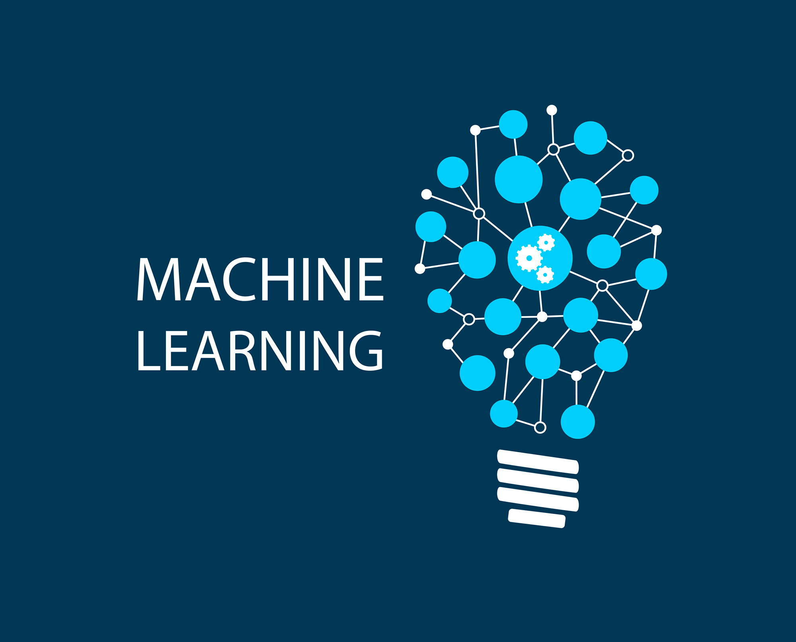
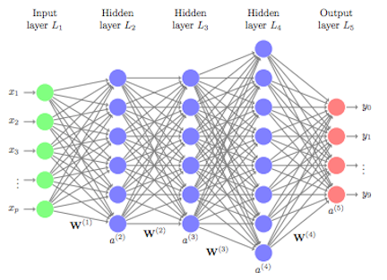
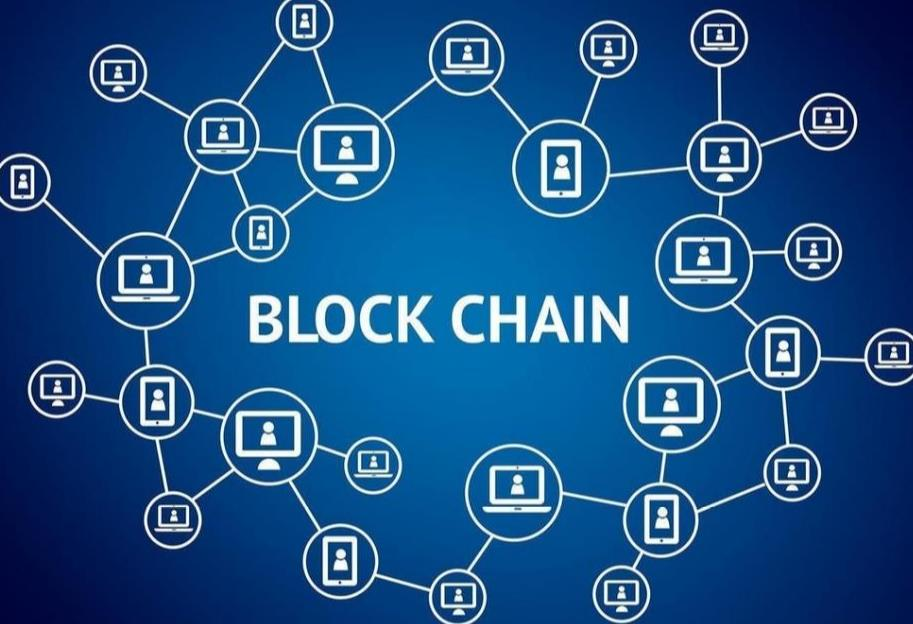
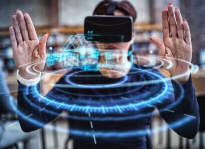
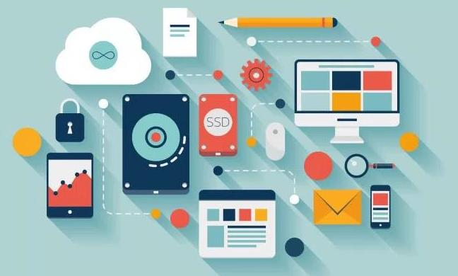
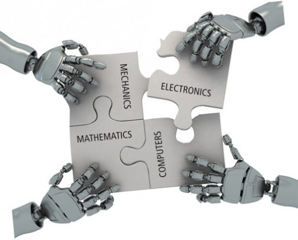
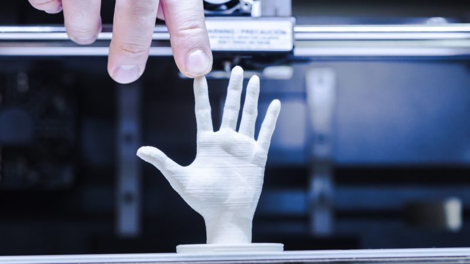

1. HTML 5
HTML5 (HyperText Markup Language, versión 5) es la quinta revisión del lenguaje HTML. Esta nueva versión (aún en desarrollo), y en conjunto con CSS3, define los nuevos estándares de desarrollo web, rediseñando el código para resolver problemas y actualizándolo así a nuevas necesidades. No se limita solo a crear nuevas etiquetas o atributos, sino que incorpora muchas características nuevas y proporciona una plataforma de desarrollo de complejas aplicaciones web (mediante los APIs). Está destinado a sustituir no sólo HTML 4, sino también XHTML 1 y DOM Nivel 2. Esta versión nos permite una mayor interacción entre nuestras páginas web y el contenido media (video, audio, entre otros) así como una mayor facilidad a la hora de codificar nuestro diseño básico.Se trata de un sistema para formatear el layout de nuestras páginas, así como hacer algunos ajustes a su aspecto. Con HTML5, los navegadores como Firefox, Chrome, Explorer, Safari y más pueden saber cómo mostrar una determinada página web, saber dónde están los elementos, dónde poner las imágenes, dónde ubicar el texto. En este sentido, el HTML5 no se diferencia demasiado de su predecesor, un lenguaje del cual hablamos hace algunos meses en nuestra guía básica de HTML. La diferencia principal, sin embargo, es el nivel de sofisticación del código que podremos construir usando HTML5.El HTML5 introduce algunos elementos que hacen que se aggiorne a los tiempos que corren. Así, muchas de las novedades están relacionadas con la forma de construir websites que se tiene en la actualidad. Una de las más importantes novedades está relacionada con la inserción de multimedia en los sitios web, que ahora contarán con etiquetas HTML especiales para poder ser incluidos. Por otro lado, algunos aspectos de diseño también son incluidos en el lenguaje, así como también algunos detalles de navegación. Veremos todo esto en algunas líneas.Videos relacionados
Qué es HTML5 Historia de HTML Curso de HTML5 Estructuras de maquetacion con html5 y css2. CSS3
Cascading Style Sheets, versión número 3, viene ligado a HTML5. CSS es lo que hace bonito a un sitio web. Se trata del lenguaje que utilizamos para dar colores, tipos y tamaños de letra, y, valga la redundancia, estilo a nuestra página. Al escribir un sitio web con HTML, debemos enlazarlo a una hoja de estilos (archivo con extensión .css) que le dará características. Con CSS3 simplificamos tareas antes difíciles de efectuar, como aplicar bordes redondeados, sombras y animaciones (!) a cualquier elemento del archivo HTML, de manera sencilla, rápida y bastante eficaz, ya que funciona en casi todos los navegadores modernos.El CSS sirve para definir la estética de un sitio web en un documento externo y eso mismo permite que modificando ese documento (la hoja CSS) podamos cambiar la estética entera de un sitio web, el mismo sitio web puede variar totalmente de estética cambiando solo la CSS, sin tocar para nada los documentos HTML o jsp o asp que lo componen. CSS es un lenguaje utilizado para dar estética a un documento HTML (colores, tamaños de las fuentes, tamaños de elemento, con css podemos establecer diferentes reglas que indicarán como debe presentarse un documento. Podemos indicar propiedades como el color, el tamaño de la letra, el tipo de letra, si es negrita, si es itálica, también se puede dar forma a otras cosas que no sean letras, como colores de fondo de una pagina, tamaños de un elemento (por ejemplo el alto y el ancho de una tabla.Videos relacionados
Qué es CSS3 Curso de Diseño Web con CSS3 Historia de CSS Conceptos Básicos de CSS3
3. JAVASCRIPT
Javascript es una especie de lenguaje de programación ligera, interpretado por la mayoría de los navegadores y que les proporciona a las páginas web, efectos y funciones complementarias a las consideradas como estándar HTML Este tipo de lenguaje de programación, con frecuencia son empleados en los sitios web, para realizar acciones en el lado del cliente, estando centrado en el código fuente de la página web.Javascript fue creado por la compañía de software “Netscape Corporation” para que fuese colocado en su navegador 2.0 y que gracias a su simplicidad, aún continúa siendo una de las herramientas de gran utilidad, para la creación de páginas web que posean algo más que texto.Es importante que quede claro, que Javascript no es del todo un lenguaje de programación, sino más bien un lenguaje de script (rutinas o guiones). Por lo tanto, es más parecido a los macros de los procesadores de hojas de cálculo o texto. Sería imposible ejecutar un programa completo con Javascript.Los Java Script ayudan a mejorar la gestión cliente/servidor; entre sus funciones básicas se encuentran: abrir y cerrar ventanas; cambios eficaces en una página (en lo que respecta a su contenido y aspecto; desarrollo de cadenas de texto; procedimientos aritméticos.Videos relacionados
Qué es JavaScript Historia de JavaScript Curso Básico de Javascript Ejercicios para estimular la lógica
4. PROGRESSIVE WEB APPS
Las aplicaciones web progresivas ( PWA ) son aplicaciones web que son páginas web o sitios web regulares , pero que pueden aparecer al usuario como aplicaciones tradicionales o aplicaciones móviles nativas . El tipo de aplicación intenta combinar características ofrecidas por la mayoría de los navegadores modernos con los beneficios de una experiencia móvil .Es un término que se da a una nueva generación de aplicaciones que incrementan su funcionalidad, conforme las capacidades del dispositivo en el que se ejecutan, incrementan, de ahí la palabra progresiva. La siguiente parte del nombre web, hace referencia a que se construyen utilizando estándares de desarrollo web, algunos ya conocidos como HTML, CSS y javaScript; y una nueva generación de APIs de javaScript. La parte final app es porque las Progressive Web Apps se comportan como aplicaciones web nativas, pero usan tecnologías web.En términos muy simplistas, son páginas web que se comportan como aplicaciones nativas. Es un oración muy simple, pero también muy profunda. Las apps nativas (iOs, Android por ejemplo), históricamente han tenido una serie de ventajas sobre las páginas web, ¿como cuáles? Almacenamiento local, ejecutarse offline, notificaciones push, performance, acceso a hardware, acceso al homescreen del dispositivo, entre otros.Con el paso del tiempo, la brecha entre las web apps y las apps nativas, se ha ido reduciendo. Hace aproximadamente 6 años, HTML5 comenzó a tomar forma, como el concepto que constituía nuevas etiquetas, CSS3 y nuevas APIs de javaScript, cuyo objetivo era hacer las páginas web, más parecidas a las aplicaciones nativas. Ahí, conocimos a localStorage y webRTC, tuvimos acceso al hardware, desde el GPS, hasta la cámara, pasando claro por el micrófono y los altavoces; también nos presentaron nuevos eventos touch, drag&drop, web workers, web sockets que no eran hardware precisamente, pero que buscaban acercar la experiencia de las interfaces web, a la de las apps nativas.Videos relacionados
Qué es una Progressive web apps Historia de Progressive web apps Curso Progressive web apps Introducción a las Aplicaciones Web Progresivas
5. INTELIGENCIA ARTIFICIAL
Coloquialmente, el término inteligencia artificial se aplica cuando una máquina imita las funciones «cognitivas»» que los humanos asocian con otras mentes humanas, como por ejemplo: «aprender» y «resolver problemas». A medida que las máquinas se vuelven cada vez más capaces, tecnología que alguna vez se pensó que requería de inteligencia se elimina de la definición. Por ejemplo, el reconocimiento óptico de caracteres ya no se percibe como un ejemplo de la «inteligencia artificial» habiéndose convertido en una tecnología común.También existen distintos tipos de percepciones y acciones, que pueden ser obtenidas y producidas, respectivamente, por sensores físicos y sensores mecánicos en máquinas, pulsos eléctricos u ópticos en computadoras, tanto como por entradas y salidas de bits de un software y su entorno software.Varios ejemplos se encuentran en el área de control de sistemas, planificación automática, la habilidad de responder a diagnósticos y a consultas de los consumidores, reconocimiento de escritura, reconocimiento del habla y reconocimiento de patrones. Los sistemas de IA actualmente son parte de la rutina en campos como economía, medicina, ingeniería y la milicia, y se ha usado en gran variedad de aplicaciones de software, juegos de estrategia, como ajedrez de computador, y otros videojuegos.Videos relacionados
Historia Qué es la Inteligencia Artificial Los mejores avances en Inteligencia Artificial El Robot Sophia 5.1 Machine learningEl aprendizaje automático o aprendizaje automatizado o aprendizaje de máquinas (del inglés, "Machine Learning") es el subcampo de las ciencias de la computación y una rama de la inteligencia artificial, cuyo objetivo es desarrollar técnicas que permitan que las computadoras aprendan. De forma más concreta, se trata de crear programas capaces de generalizar comportamientos a partir de una información suministrada en forma de ejemplos.Es, por lo tanto, un proceso de inducción del conocimiento. En muchas ocasiones el campo de actuación del aprendizaje automático se solapa con el de la estadística computacional, ya que las dos disciplinas se basan en el análisis de datos. Sin embargo, el aprendizaje automático también se centra en el estudio de la complejidad computacional de los problemas. Muchos problemas son de clase NP-hard, por lo que gran parte de la investigación realizada en aprendizaje automático está enfocada al diseño de soluciones factibles a esos problemas. El aprendizaje automático puede ser visto como un intento de automatizar algunas partes del método científico mediante métodos matemáticos.El aprendizaje automático tiene una amplia gama de aplicaciones, incluyendo motores de búsqueda, diagnósticos médicos, detección de fraude en el uso de tarjetas de crédito, análisis del mercado de valores, clasificación de secuencias de ADN, reconocimiento del habla y del lenguaje escrito, juegos y robótica.Algunos sistemas de aprendizaje automático intentan eliminar toda necesidad de intuición o conocimiento experto de los procesos de análisis de datos, mientras otros tratan de establecer un marco de colaboración entre el experto y la computadora. De todas formas, la intuición humana no puede ser reemplazada en su totalidad, ya que el diseñador del sistema ha de especificar la forma de representación de los datos y los métodos de manipulación y caracterización de los mismos. Sin embargo, las computadoras son utilizadas por todo el mundo con fines tecnológicos muy buenos.Videos relacionados
Qué es Machine Learnig Historia Curso Machine Learning Aprendizaje no Supervisado 5.2 Deep learning
Aprendizaje profundo (en inglés, deep learning) es un conjunto de algoritmos de clase aprendizaje automático (en inglés, machine learning) que intenta modelar abstracciones de alto nivel en datos usando arquitecturas compuestas de transformaciones no lineales múltiples.El aprendizaje profundo es parte de un conjunto más amplio de métodos de aprendizaje automático basados en asimilar representaciones de datos. Una observación (por ejemplo, una imagen) puede ser representada en muchas formas (por ejemplo, un vector de píxeles), pero algunas representaciones hacen más fácil aprender tareas de interés (por ejemplo, "¿es esta imagen una cara humana?") sobre la base de ejemplos, y la investigación en este área intenta definir qué representaciones son mejores y cómo crear modelos para reconocer estas representaciones.Varias arquitecturas de aprendizaje profundo, como redes neuronales profundas, redes neuronales profundas convolucionales, y redes de creencia profundas, han sido aplicadas a campos como visión por computador, reconocimiento automático del habla, y reconocimiento de señales de audio y música, y han mostrado producir resultados de vanguardia en varias tareas.Los algoritmos de aprendizaje profundo contrastan con los algoritmos de aprendizaje poco profundo por el número de transformaciones aplicadas a la señal mientras se propaga desde la capa de entrada a la capa de salida. Cada una de estas transformaciones incluye parámetros que se pueden entrenar como pesos y umbrales2(p6). No existe un estándar de facto para el número de transformaciones (o capas) que convierte a un algoritmo en profundo, pero la mayoría de investigadores en el campo considera que aprendizaje profundo implica más de dos transformaciones intermedias.Videos relacionados
Introducción al Deep Learning Qué es Deep Learning Deep Learning con Python Deep Learning Una introducción práctica
5.3 Red neuronal
Las redes neuronales (también conocidas como sistemas conexionistas) son un modelo computacional basado en un gran conjunto de unidades neuronales simples (neuronas artificiales), de forma aproximadamente análoga al comportamiento observado en los axones de las neuronas en los cerebros biológicos.Cada unidad neuronal está conectada con muchas otras y los enlaces entre ellas pueden incrementar o inhibir el estado de activación de las neuronas adyacentes. Cada unidad neuronal, de forma individual, opera empleando funciones de suma. Puede existir una función limitadora o umbral en cada conexión y en la propia unidad, de tal modo que la señal debe sobrepasar un límite antes de propagarse a otra neurona. Estos sistemas aprenden y se forman a sí mismos, en lugar de ser programados de forma explícita, y sobresalen en áreas donde la detección de soluciones o características es difícil de expresar con la programación convencional.Las redes neuronales suelen consistir en varias capas o un diseño de cubo, y la ruta de la señal atraviesa de adelante hacia atrás. Propagación hacia atrás es donde se utiliza la estimulación hacia adelante o en el "frente" para restablecer los pesos de las unidades neuronales y esto a veces se realiza en combinación con una formación en la que se conoce el resultado correcto. Las redes modernas son un poco más libres en el sentido de que fluye en términos de estimulación e inhibición con conexiones que interactúan de una manera mucho más caótica y compleja. Las redes neuronales dinámicas son lo más avanzadas en que se pueden formar dinámicamente nuevas conexiones e incluso nuevas unidades neuronales.Nuevas investigaciones sobre el cerebro a menudo estimulan la creación de nuevos patrones en las redes neuronales. Un nuevo enfoque está utilizando conexiones que se extienden mucho más allá y capas de procesamiento de enlace en lugar de estar siempre localizado en las neuronas adyacentes. Otra investigación está estudiando los diferentes tipos de señal en el tiempo que los axones se propagan, como el aprendizaje profundo , interpola una mayor complejidad que un conjunto de variables booleanas que son simplemente encendido o apagado.Videos relacionados
Aprender Redes Neuronales Cómo funcionan las redes neuronales Como Aprenden Las Redes Neuronales Redes Neuronales Y Algoritmos Geneticos En Videojuegos6. CRIPTOMONEDAS
Una criptomoneda, criptodivisa (del inglés cryptocurrency) o criptoactivo es un medio digital de intercambio. La primera criptomoneda que empezó a operar fue el bitcoin en 2009 y, desde entonces, han aparecido muchas otras con diferentes características y protocolos como Litecoin, Ethereum, Ripple, Dogecoin.En los sistemas de criptomonedas, se garantiza la seguridad , integridad y equilibrio de sus estados de cuentas (contabilidad) por medio de un entramado de agentes (transferencia de archivo segmentada o transferencia de archivo multifuente) que se verifican (desconfían) mutuamente llamados mineros, que son, en su mayoría, público en general y protegen activamente la red (el entramado) al mantener una alta tasa de procesamiento de algoritmos, con la finalidad de tener la oportunidad de recibir una pequeña propina, que se reparte de manera aleatoria.Romper la seguridad existente en una criptomoneda es matemáticamente posible, pero el costo para lograrlo sería inasumiblemente alto. Por ejemplo, un atacante que intentase quebrar el sistema de prueba de trabajo de Bitcoin necesitaría una potencia computacional mayor que el de todo el entramado (red-enjambre) de todos los mineros del sistema, y aun así, solo tendría una probabilidad de éxito del 50% (n.º de ronda de autenticación), en otras palabras, romper la seguridad de Bitcoin exigiría una capacidad superior a la de empresas tecnológicas del tamaño de Google.Las criptomonedas hacen posible el llamado internet del valor, también conocido por las siglas IoV (del inglés internet of value), también llamado Internet del dinero: son aplicaciones de Internet que permiten el intercambio de valor en forma de criptomonedas. Este valor pueden ser contratos, propiedad intelectual, acciones o cualquier propiedad de algo con valor. Las cosas de valor ya se podían intercambiar antes usando sistemas de pago como Paypal. Sin embargo la diferencia entre pagar con algo como Paypal y pagar con una criptomoneda consiste en que pagar con Paypal requiere que el pago se haga a través de redes privadas como las de las tarjetas de crédito y bancos, mientras que el pago usando criptomonedas no tiene intermediarios. Va directamente del comprador al vendedor. De esta forma, se tiene un sistema de transferencia universal de valor, libre de intermediaciones.Videos relacionados
Qúe son las criptomonedas Cómo invertir con criptomonedas Cómo funcionan las criptomonedas ventajas y desventajas de las criptomonedas 7. BLOCKCHAIN
Entre otras cosas, es una de las palabras de moda en los últimos tiempos. La cadena de bloques es también un concepto que plantea una enorme revolución no solo en nuestra economía, sino en todo tipo de ámbitos.Entender lo que es esa cadena de bloques no es tan difícil, y dado que cada vez se utiliza más.Pues un gigantesco libro de cuentas en los que los registros (los bloques) están enlazados y cifrados para proteger la seguridad y privacidad de las transacciones. Es, en otras palabras, una base de datos distribuida y segura (gracias al cifrado) que se puede aplicar a todo tipo de transacciones que no tienen por qué ser necesariamente económicas.Esa cadena de bloques tiene un requisito importante: debe haber varios usuarios (nodos) que se encarguen de verificar esas transacciones para validarlas y que así el bloque correspondiente a esa transacción (en cada bloque hay un gran número de transacciones que eso sí, es variable) se registre en ese gigantesco libro de cuentas.Videos relacionados
Cómo funciona Blockchain Qué es y cómo funciona el Blockchain Blockchain: Más allá del bitcoin Las matemáticas de Blockchain
8. CYBERSEGURIDAD
La ciberseguridad es el conjunto de herramientas, políticas, conceptos de seguridad, salvaguardas de seguridad, directrices, métodos de gestión de riesgos, acciones, formación, prácticas idóneas, seguros y tecnologías que pueden utilizarse para proteger los activos de la organización y los usuarios en el ciberentorno.“Protección de activos de información, a través del tratamiento de amenazas que ponen en riesgo la información que es procesada, almacenada y transportada por los sistemas de información que se encuentran interconectados”.La norma ISO 27001 define activo de información como los conocimientos o datos datos que tienen valor para una organización, mientras que los sistemas de información comprenden a las aplicaciones, servicios, activos de tecnologías de información u otros componentes que permiten el manejo de la misma.Por lo tanto, la ciberseguridad tiene como foco la protección de la información digital que “vive” en los sistemas interconectados. En consecuencia, está comprendida dentro de la seguridad de la información.Videos relacionados
Conceptos Fundamentales de Ciberseguridad Ciberseguridad Documental - Ciberseguridad vs Ciberterrorismo Vulnerabilidades 9. REALIDAD VIRTUAL
La realidad virtual (RV) es un entorno de escenas u objetos de apariencia real. La acepción más común refiere a un entorno generado mediante tecnología informática, que crea en el usuario la sensación de estar inmerso en él. Dicho entorno es contemplado por el usuario a través de un dispositivo conocido como gafas o casco de realidad virtual. Este puede ir acompañado de otros dispositivos, como guantes o trajes especiales, que permiten una mayor interacción con el entorno así como la percepción de diferentes estímulos que intensifican la sensación de realidad.El término realidad virtual (RV) se popularizó a finales de la década de 1980 por Jaron Lanier, uno de los pioneros del campo. Al mismo tiempo, también apareció el término Realidad Artificial (RA). En 1982 el término ciberespacio fue acuñado en una novela por W. Gibson ("Burning Chrome"). La Enciclopedia Británica describe la realidad virtual como "el uso del modelado y la simulación por computadora que permite a una persona interactuar con un entorno sensorial tridimensional (3D) artificial u otro entorno sensorial". Además, establece que "las aplicaciones de realidad virtual sumergen al usuario en un entorno generado por computadora que simula la realidad mediante el uso de dispositivos interactivos, que envían y reciben información y se usan como gafas, auriculares, guantes o trajes para el cuerpo". Por ejemplo, un usuario que usa una pantalla montada en la cabeza con un sistema de proyección estereoscópica puede ver imágenes animadas de un entorno virtual. Un término importante es presencia o telepresencia, que se puede describir como una ilusión de "estar allí"Componentes principales La realidad virtual comprende dos componentes principales: el entorno del usuario y el entorno virtual. Mientras el usuario interactúa con el sistema de realidad virtual, los dos entornos se comunican e intercambian información a través de una barrera llamada interfaz. La interfaz puede considerarse como un traductor entre el usuario y el sistema de realidad virtual. Cuando el usuario aplica acciones de entrada (por ejemplo, movimiento, generación de fuerza, voz, etc.), la interfaz traduce estas acciones en señales digitales, que pueden ser procesadas e interpretadas por el sistema. Por otro lado, las reacciones calculadas del sistema también se traducen por la interfaz en cantidades físicas, que el usuario puede percibir mediante el uso de diferentes tecnologías de pantalla y actuador (por ejemplo, imágenes, sonidos, olores, etc.). Finalmente, el usuario interpreta esta información y reacciona al sistema en consecuencia. Importancia de la multimodalidad En las aplicaciones de realidad virtual, el intercambio de diferentes cantidades físicas entre el usuario y el entorno virtual se produce a través de diferentes canales o modalidades. Tales modalidades pueden ser sonido, visión o tacto. La comunicación con múltiples modalidades se llama interacción multimodal. La interacción multimodal permite que varios tipos de modalidades se intercambien simultáneamente entre el usuario y el entorno virtual. El objetivo de la aplicación de la interacción multimodal es proporcionar una imagen completa y realista de la situación, para proporcionar información redundante, por ejemplo, por razones de seguridad, y para aumentar la calidad de la presencia.Videos relacionados
Qué es Realidad virtual Ventajas de Realidad Virtual Ventajas de realidad virtual Desventajas de Realidad Virtual10. REALIDAD AUMENTADA
(RA) es el término que se usa para definir la visión de un entorno físico del mundo real, a través de un dispositivo tecnológico. Este dispositivo o conjunto de dispositivos, añaden información virtual a la información física ya existente; es decir, una parte sintética virtual a la real. De esta manera; los elementos físicos tangibles se combinan con elementos virtuales, creando así una realidad aumentada en tiempo real.
La realidad aumentada es diferente de la realidad virtual: sobre la realidad material del mundo físico monta una realidad visual generada por la tecnología, en la que el usuario percibe una mezcla de las dos realidades; en cambio, en la realidad virtual el usuario se aísla de la realidad material del mundo físico para sumergirse en un escenario o entorno totalmente virtual.Con la ayuda de la tecnología; por ejemplo, añadiendo la visión por un computador y reconocimiento de objetos, la información sobre el mundo real alrededor del usuario, se convierte en interactiva y digital. La información artificial sobre el medio ambiente y los objetos puede ser almacenada y recuperada como una capa de información en la parte superior de la visión del mundo real.La realidad aumentada de investigación explora la aplicación de imágenes generadas por ordenador en tiempo real a secuencias de vídeo como una forma de ampliar el mundo real. La investigación incluye a este respecto el uso de pantallas colocadas en la cabeza, un monitor virtual colocado en la retina para mejorar la visualización y la construcción de ambientes controlados a partir de sensores y actuadores.Videos relacionados
Qué es realidad aumentada Cómo funciona Evento en Centro Comercial Ejemplos uso de Realidad Aumentada en la publicidad11. REALIDAD MIXTA
También llamada a veces realidad híbrida, es la combinación de realidad virtual y realidad aumentada. Esta combinación permite crear nuevos espacios en los que interactúan tanto objetos y/o personas reales como virtuales. Es decir, se puede considerar como una mezcla entre la realidad, realidad aumentada, virtualidad aumentada y realidad virtual.El término realidad mixta no debe confundirse con el de realidad aumentada o RA. La realidad aumentada genera los estímulos a tiempo real para la interacción del usuario, los cuales se superponen sobre el entorno físico de este, mientras que la realidad mixta no sólo permite la interacción del usuario con el entorno virtual sino que también permite que objetos físicos del entorno inmediato del usuario sirvan como elementos de interacción con el entorno virtual.En la realidad mixta se trata de llevar el mundo real al mundo virtual. La idea es generar un modelo 3D de la realidad y sobre él superponer información virtual. De esta forma, se podrán combinar ambas realidades para agregar contenido adicional de valor para el usuario de MR.En la actualidad, podríamos mencionar 3 empresas que están apostando fuerte por la realidad mixta: Microsoft, Magic Leap y MetaVision.Videos relacionados
Qué es Realidad Mixta Provando la ralidad mixta Tu ordenador será capaz de transmitir sensaciones Windows Mixed Reality - Realidad Mixta 12. IOT(INTERNET DE LAS COSAS)
El Internet de las Cosas es un concepto que cada vez toma más relevancia, pero aún no termina de cuajar en los hogares. Descubre exactamente de qué se trata.Es un término del que escuchamos hablar constantemente. Internet de las cosas, Internet of Things o IoT por sus siglas en ingles, es un concepto un poco abstracto pero que ha estado ganando bastante popularidad en los últimos meses. La idea que intenta representar queda bastante bien ilustrada por su nombre, cosas cotidianas que se conectan al Internet, pero en realidad se trata de mucho más que eso.Para entender de qué va el Internet de las cosas debemos también comprender que sus fundamentos no son en lo absoluto nuevos. Desde hace unos 30 años que se viene trabajando con la idea de hacer un poco más interactivos todos los objetos de uso cotidiano. Ideas como el hogar inteligente, también conocido como la casa del mañana, han evolucionado antes de que nos demos cuenta en el hogar conectado para entrar al Internet de las cosas.Si tuviéramos que dar una definición del Internet de las cosas probablemente lo mejor sería decir que se trata de una red que interconecta objetos físicos valiéndose del Internet. Los mentados objetos se valen de sistemas embebidos, o lo que es lo mismo, hardware especializado que le permite no solo la conectividad al Internet, sino que además programa eventos específicos en función de las tareas que le sean dictadas remotamente.Videos relacionados
Qúe es? Internet de las Cosas(documenal) Como funciona Ejemplo de hasta donde llegará el Internet de las cosas 13. MECATRÓNICA
La mecatrónica es una disciplina que une la ingenieria mecánica, ingenieria electronica, ingenieria de control e ingenieria informática, y sirve para diseñar y desarrollar productos que involucren sistemas de control para el diseño de productos o procesos inteligentes, lo cual busca crear maquinaria más compleja para facilitar las actividades del ser humano a través de procesos electrónicos en la industria mecánica, principalmente. Debido a que combina varias ingenierías en una sola, su punto fuerte es la versatilidad.Un consenso común es describir a la mecatrónica como una disciplina integradora de las áreas de mecánica, electronica e informatica cuyo objetivo es proporcionar mejores productos, procesos y sistemas. La mecatrónica no es, por tanto, una nueva rama de la ingenieria, sino un concepto recientemente desarrollado que enfatiza la necesidad de integración y de una interacción intensiva entre diferentes áreas de la ingeniería.Con base en lo anterior, se puede hacer referencia a la definición propuesta por J. A. Rietdijk: "Mecatrónica es la combinación sinergia de la ingeniería mecánica de precisión, de la electronica, del control automatico y de los sistemas para el diseño de productos y procesos", la cual busca crear maquinaria más compleja para facilitar las actividades del ser humano a través de procesos electrónicos en la industria mecánica principalmente.El campo ocupacional actual de la mecatrónica está en empresas de la industria automotriz, manufacturera, petroquímica, metal-mecánica, alimentos y electromecánica, realizando sobre todo actividades de diseño, manufactura, programación de componentes y sistemas industriales y equipo especializado, así como en la promoción y activación de empresas de servicios profesionales.Videos relacionados
Introducción a la Mecatrónica Qué es la ingeniería mecatrónica Capacitarse para los autos que vendrán La Realidad de Estudiar Mecatrónica 14. 3D PRINTING
La impresión 3D o la fabricación aditiva es un proceso de creación de objetos sólidos tridimensionales a partir de un archivo digital.La creación de un objeto impreso en 3D se logra mediante procesos aditivos. En un proceso aditivo, un objeto se crea colocando sucesivas capas de material hasta que se crea el objeto. Cada una de estas capas se puede ver como una sección transversal horizontal en rodajas finas del objeto eventual. La impresión 3D es lo opuesto a la fabricación sustractiva que consiste en cortar / ahuecar una pieza de metal o plástico con, por ejemplo, una fresadora.La impresión 3D le permite producir formas complejas (funcionales) utilizando menos material que los métodos de fabricación tradicionales.Videos relacionados
Historia de las impresoras 3D Cómo Funciona una Impresora 3D Qué es una Impresora 3D Cosas increíbles que puedes hacer con una impresora 3D15. TECNOLGÍA G5
La nueva tecnología de quinta generación, es la proxima manera de manejar la telefonía móvil, y prevén que dara gran impacto económico y productivo.La quinta generación de tecnología móvil está aproximándose, aunque suene difícil de digerir ya que existen compañías móviles que no tiene completamente la tecnología G4, esta nueva idea ya está ejecutándose y tiene grandes beneficios, según los expertos.Con gran impacto económico y productivo la tecnología de quinta generación, es la proxima manera de manejar la telefonía móvil.Nuevo estándar de banda ancha inalámbrica que proporciona mayores velocidades, cobertura y prestaciones que el actual LTE-4G, las conexiones 100 veces más rápidas (aunque en laboratorios tienen velocidades 250 veces más), con velocidades medias de 20 Gbps y sobre todo descargas de datos que superan a las de las actuales redes fijas de fibra óptica, y así cualquier película de 1GB estará lista en menos de diez segundos.Videos relacionados
Red 5G - Lo bueno, lo malo y lo feo Qué son las redes 5G La Siniestra tecnología 5G El futuro de la red 5G RESUMEN DE TODOS LOS TEMAS HTML 5 Es la última versión de HTML. El término representa dos conceptos diferentes: Se trata de una nueva versión de HTML, con nuevos elementos, atributos y comportamientos. Contiene un conjunto más amplio de tecnologías que permite a los sitios Web y a las aplicaciones ser más diversas y de gran alcance. CSS3Hojas de Estilo en Cascada (CSS) es un lenguaje de estilo de hojas usado para describir la presentación de las páginas web. CSS permite la separación del contenido del documento de la presentación del documento (disposición, colores, fuentes, etcétera). JAVASCRIPTEs un lenguaje ligero e interpretado, orientado a objetos con funciones de primera clase, más conocido como el lenguaje de script para páginas web, pero también usado en muchos entornos sin navegador, tales como node.js, Apache CouchDB y Adobe Acrobat. Es un lenguaje script multi-paradigma, basado en prototipos, dinámico, soporta estilos de programación funcional, orientada a objetos e imperativa. PROGRESSIVE WEB APPSLas aplicaciones web progresivas son instalables y viven en la pantalla de inicio del usuario , sin la necesidad de una tienda de aplicaciones. Ofrecen una experiencia inmersiva de pantalla completa con la ayuda de un archivo de manifiesto de aplicación web e incluso pueden volver a atraer a los usuarios con notificaciones push web INTELIGENCIA ARTIFICIALEs la simulación de procesos de inteligencia humana por parte de máquinas, especialmente sistemas informáticos. Estos procesos incluyen el aprendizaje (la adquisición de información y reglas para el uso de la información), el razonamiento (usando las reglas para llegar a conclusiones aproximadas o definitivas) y la autocorrección. Las aplicaciones particulares de la AI incluyen sistemas expertos, reconocimiento de voz y visión artificial.